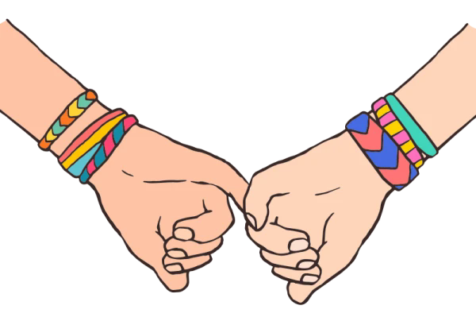

Maya sat criss-cross on her bedroom floor, carefully tying the final knot on the bracelet she had been working on all day. Tiny threads lay scattered across her wooden floor. Weaving the threads tightly together ached her fingers, but she smiled proudly when she held it up.
It wasn’t perfect. One side was slightly uneven, and the colors twisted strangely towards the end, yet Maya thought it looked good.
Especially because it was for Sara.
The next day at school, Sara kept reaching into her backpack to check if the bracelet was still there. Every time she thought about giving it to Sara, her stomach filled with nervous butterflies.
At lunch, Sara dropped into the seat beside her as usual.
“You would not believe the chemistry quiz I just took,” Sara groaned dramatically, rolling her eyes.
Maya laughed. “Was it really that bad?”
“I’m pretty sure I invented new answers.”
The two girls laughed together. Talking to Sara always made Maya feel calmer somehow. Like things that usually felt awkward suddenly became easy.
Maya hesitated and then reached for her backpack to give Sara her gift. Suddenly, she felt very nervous and shy.
“I made this,” she said quietly. “It’s for you.”
Sara’s eyes widened. “Wait, seriously?”
Maya nodded nervously. “You don’t have to wear it if you don’t want to!”
Sara immediately put it on her wrist.
“I love it,” she exclaimed. “I’m literally never taking this off.”
Maya felt warmth rush into her face, and she began to blush.
After school, the girls walked home together, as they did almost every day. Walking side by side, talking the entire time about anything and everything.
Sara kept glancing down at the bracelet and smiling.
“You know,” she said carefully, “my cousin told me something the other day.”
“What?”
“She said sometimes when people get extra nervous around someone… it means they have a crush on them.”
Maya blushed hard; even her ears showed a deep pink.
Sara laughed softly. “You okay?”
“Yep,” Maya squeaked.
Sara stopped walking for a moment and looked at her seriously.
“I think I like you,” she admitted quietly. “Like, um, more than just a friend.”
For a moment, Maya forgot how to breathe. All the nervous thoughts she had carried around for months suddenly felt lighter.
“Good,” Maya said finally, smiling so hard her cheeks hurt. “Because I like you too.”
Sara reached over and softly grabbed her hand.
Maya squeezed back immediately.
The two girls continued down the sidewalk together, laughing quietly as their matching bracelets swung beside them.